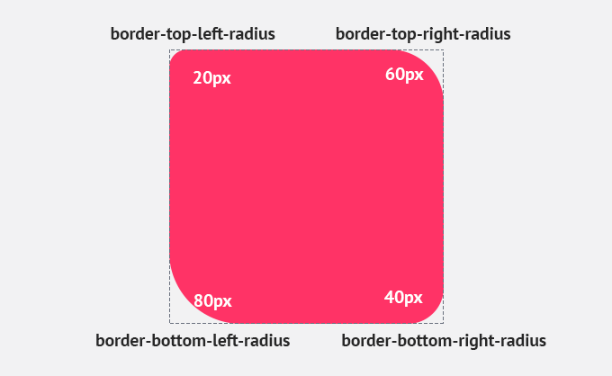

| Nombre el atributo |
Descripcion |
Valores posible |
Ejemplos de uso |
Imagen representativa |
Fuente |
| Font-Size |
El atributo font-size define el tamaño de la fuente (texto) de un elemento HTML. Controla qué tan grande o pequeño se muestra el texto. |
Unidades absolutas: px (píxeles), pt (puntos), cm (centímetros), etc.
Unidades relativas: em, rem, % (porcentaje).
Palabras clave: small, medium, large, x-large, etc. |
p {
font-size: 16px; }
h1 {
font-size: 2em;} |
 |
Fuente |
| border-radius |
El atributo border-radius redondea las esquinas de un elemento. Puedes aplicarlo a cualquier elemento con bordes, como cajas, botones o imágenes. |
Un valor: 10px (todas las esquinas iguales).
Dos valores: 10px 20px (esquina superior izquierda e inferior derecha, y esquina superior derecha e inferior izquierda).
Cuatro valores: 10px 20px 30px 40px (cada esquina con un radio diferente).
Porcentaje: 50% (para crear círculos o elipses). |
img {
border-radius: 50%;} |
 |
Fuente |
| display |
El atributo display controla cómo se muestra un elemento en la página. Define si un elemento es un bloque, en línea, o utiliza un modelo de diseño como flexbox o grid. |
block: El elemento ocupa todo el ancho disponible.
inline: El elemento ocupa solo el espacio necesario.
inline-block: Combina características de bloque y en línea.
none: Oculta el elemento.
flex: Activa el modelo de diseño flexbox.
grid: Activa el modelo de diseño grid. |
.container {
display: flex; } |
 |
Fuente |
| flexbox |
Flexbox es un modelo de diseño que permite organizar elementos de manera flexible dentro de un contenedor. Se activa con display: flex y permite controlar la alineación, dirección y distribución de los elementos hijos. |
flex-direction: Define la dirección de los elementos (fila o columna).
justify-content: Alinea los elementos en el eje principal.
align-items: Alinea los elementos en el eje secundario.
flex-wrap: Controla si los elementos se envuelven en múltiples líneas. |
.container {
display: flex;
justify-content: center;
align-items: center; } |
 |
Fuente |
| position |
El atributo position define cómo se posiciona un elemento en la página. Puede ser estático, relativo, absoluto, fijo o "pegajoso". |
static: Posición normal (por defecto).
relative: Posición relativa a su ubicación original.
absolute: Posición relativa al contenedor más cercano con posición no estática.
fixed: Posición fija en la ventana del navegador.
sticky: Combina relative y fixed. |
div {
position: relative;
top: 20px;
}
header {
position: fixed; } |
 |
Fuente |
| box-shadow |
El atributo box-shadow agrega sombras a un elemento. Puedes controlar el desplazamiento, el desenfoque, el color y el tamaño de la sombra. |
h-offset: Desplazamiento horizontal.
v-offset: Desplazamiento vertical.
blur: Desenfoque de la sombra.
spread: Tamaño de la sombra.
color: Color de la sombra. |
div {
box-shadow: 5px 5px 10px rgba(0, 0, 0, 0.5);
} |
|
Fuente |
| overflow |
El atributo overflow controla cómo se maneja el contenido que desborda un elemento. Puede ocultarlo, mostrar barras de desplazamiento o permitir que se desborde. |
visible: Muestra el contenido desbordado.
hidden: Oculta el contenido desbordado.
scroll: Muestra barras de desplazamiento.
auto: Muestra barras de desplazamiento solo si es necesario.
|
div {
overflow: hidden;} |
 |
Fuente |
| z-index |
El atributo z-index controla el orden de apilamiento de los elementos superpuestos. Un valor mayor coloca el elemento por encima de otros con valores menores. |
Números enteros: 1, 2, -1, etc |
div {
position: absolute;
z-index: 1;
} |
 |
Fuente |
| opacity |
El atributo opacity controla la transparencia de un elemento. Un valor de 1 es completamente opaco, y 0 es completamente transparente. |
Números entre 0 y 1: 0.5, 0.75, etc. |
img {
opacity: 0.5;
} |
|
Fuente |
| margin y padding |
margin: Define el espacio exterior alrededor de un elemento. padding: Define el espacio interior entre el contenido y el borde de un elemento |
Unidades: px, em, %, etc.
Valores individuales: margin: 10px; (igual en todos los lados).
Valores múltiples: margin: 10px 20px; (arriba/abajo y izquierda/derecha). |
div {
margin: 20px;
padding: 10px;
} |
 |
Fuente |